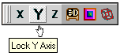
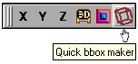
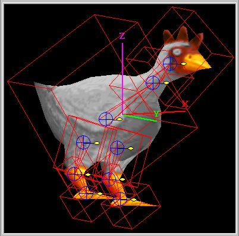

View Selection tool-palette
Updated 01 Mar 2011
- QuArK Information Base
- 1. Introduction to QuArK
- 1.6. Model-editor in QuArK
- 1.6.6. Tool-palettes
|
|
View Selection tool-palette
Updated 01 Mar 2011
|
Upper levels: - QuArK Information Base - 1. Introduction to QuArK - 1.6. Model-editor in QuArK - 1.6.6. Tool-palettes |
|
1.6.6.7. View Selection tool-palette |
[ - - ] |
|
|
Index |
|
X Y Z Axis locks |
cdunde - 04 Apr 2007 | [ Top ] |
|
 There tree icon buttons lock each axis independently in all of the 2D and 3D views for added control when moving vertexes of the model's mesh. They are also interactive with the same items listed on the Commands menu. |
|
View Options |
cdunde - 17 Jul 2007 | [ Top ] |
Special Notes: If the fill colors are not correct for the views, briefly hold down the RMB to reset all of the active fill color views. Once a color has been selected, you should see all of the view colors updated. |
|
Color Options |
cdunde - 05 Apr 2007 | [ Top ] |
|
|
Bbox Maker |
cdunde - 01 Mar 2011 | [ Top ] |
|
 When this button is active, it allows the LMB drag creation of a bounding box in any 2D view. Normally it would be used when a single bone is selected for the bbox to be linked to. However, they can also be used with models that may or may not have bones for different elements that a particular model format specifies. Bboxes are polyhedrons just like in the map editor. Bbox stands for bounding box which can also be used for a collision box depending on the model format's needs. If a bbox is associated with a bone then its name should match that bone's name, for example  upperleg:bone -> upperleg:p They can be placed in the tree-view individually or in a BboxGroupFolder:bbg, which is usually done to keep them identified with one particular imported model. The technical part of how they are handled in the editor is covered in the section entitled Adding Bones & Their Structure. Look under its sub-section for What's in ModelComponentList . |
|
Copyright (c) 2009, GNU General Public License by The QuArK (Quake Army Knife) Community - http://quark.sourceforge.net/ |
[ - Top - ] |